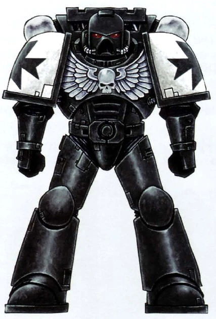

TEMPLARIOS NEGROS
"Vi la escena de una masacre en la que los cadáveres se apilaban en el suelo cómo las hojas muertas de un bosque. La población no había muerto como mueren los soldados en batalla, encendidos por el ardor y el valor, con un arma en la mano y devolviendo los golpes. Habían muerto como mueren los indefensos: con el corazón lleno de un terror mucho peor que la propia muerte."
—Fragmento de la investigación del Inquisidor Barzano durante la Cruzada de la Nebulosa de Garon
Los templarios negros son el capítulo mas ferviente en fé al emperador, llegando hasta a venerarlo como a un dios. Este capítulo cuenta con una proeza marcial inigualada en todo el Imperium. Donde Neófito, iniciado y hermano de espada luchan juntos contra los horrores de la galaxia. Un capítulo basado en flota, estos marines han estado en una cruzada eterna que ha perdurado mas de 10.000 años.
Fundados por el gran Sigismundo, el mejor espadachín de todas las legiones de marines originales, los templarios negros se caracterizan por su maestría del combate cuerpo a cuerpo. Donde sus armas favoritas suelen ser las espadas-sierra y las armas de energía.

Estos marines llevan cuatro votos consigo: "aborrece a la bruja, destruye a la bruja", "no sufras al impío en vivir", "sostener el honor del emperador" y "aceptar todo desafío, sin importar las chances".
Si se desea saber más, aqui hay información:
Leer más